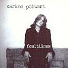

Celtic Lyrics Corner > Artists & Groups > Karine Polwart > Faultlines > What Are You Waiting For?
|  | What Are You Waiting For? |
| Credits : | Karine Polwart |
| Appears On : | Faultlines |
| Language : | English |
Lyrics :
You've been waiting for the wind to change direction
Waiting for the sun to shine
You've been waiting for a new connection
But you're walking on the same old line
You've been waiting so long
How can you wait a single minute more?
You've been waiting so long
You just don't know what you are waiting for
You've been wishing for a gentle hand to guide you
For a heavenly sign
You've been wishing that a spark could burn inside you
For a little bit more time
You've been wishing so hard
How can you now wish for any more?
You've been wishing so hard
You just don't know what you are wishing for
Some say the good things come to all those who wait
But then again, they might not come at all
You've been looking to what's just around the corner
Living for another day
You've been looking to the distant skyline
Looking like you've lost your way
You've been looking so hard for someting
Your eyes are getting sore
You've been looking so hard
You just don't know what you are looking for
Some say the good things come to all those who wait
But then again, they might not come at all
Some say the good things come to all those who wait
But then again, they might not come at all